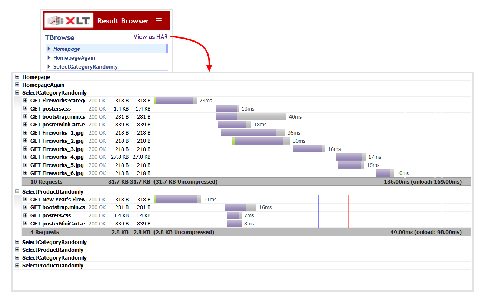

XLT 4.13.1
Test Framework
Encoded ampersand in URI path not preserved (#3661)
URI path segments may contain characters which are reserved according to RFC3986 in percent-encoded form. However, since Apache HttpClient 4.5.8 (used by HtmlUnit 2.35) percent-encoded ampersand characters in URI path segments are not preserved any longer but written in decoded form to the wire. So http://localhost/wild%26free/index.html is automatically converted to http://localhost/wild&free/index.html.
It is not clear yet, whether this behavior is a bug or a feature of HttpClient. Anyway, many servers are not prepared for clients performing this conversion and would return redirects or error pages in this case. Since this functionality cannot be turned off in HttpClient, we have decided to ship XLT with the older HttpClient 4.5.6 instead.
XLT Jenkins Plugin
XLT now ships with the XLT Jenkins Plugin 1.3.3, which fixes some issues. See below for more information. We recommend to update your Jenkins installation accordingly. The plugin can be found in directory
<xlt>/tools/xlt-jenkins-plugin-1.3.3.
URLs of started EC2 instances not passed to XLT (#3623)
If the plugin is configured to use AWS EC2 instances for the load test, the instances are started prior to the load test and terminated after it, but XLT was not configured correctly to actually use them. Fixed.
Load test results lost if report generation failed (#3668)
In case the generation of the load test report or the difference report failed for any reason, the results of the performed load test were lost as build artifacts were saved only if the generation of load test and difference reports had finished successfully. Now this step is performed prior to report generation.
XLT 4.13.0
Test Framework
Result Browser
Request timeline – In order to let you inspect the temporal sequence and duration of requests in a graphical timeline view, XLT may now generate an HTTP Archive (HAR) file along with an appropriate viewer as part of the result browser. The HAR file contains information about all requests/responses grouped by their corresponding action, including headers, sizes, and network timings. For client-performance tests, page load event timings are included as well. In order to save valuable disk space, the response content is NOT included in the generated HAR files.
To enable this feature, add the following line to your test configuration:
com.xceptance.xlt.output2disk.writeHarFile = trueThe HAR viewer can be opened either by clicking the View as HAR link in the result browser or directly by opening the harviewer.html file in the root directory of the result browser.

Request body for PUT and PATCH – On the Request/Response Information tab, the XLT Result Browser shows almost all information about a certain request at a glance. For POST requests, either the form data or (a part of) the raw request body is shown as well. Now the raw request body of PUT and PATCH requests is also shown this way. Especially if the request body is small, you will often get the information you need without having to switch to the Request Body tab and back again.
Other Improvements
ExclusiveDataProvider to filter out comment lines – The ExclusiveDataProvider can now be configured to filter out comment lines from its test data file, i.e. lines that start with #. Previously, this was the responsibility of the data item parser. If the ExclusiveDataProvider handles comment lines the benefits are twofold:
- The logic of the data item parser can be simpler.
- The resulting exclusive data partitions, one for each agent, are sized more equally as comment lines are filtered out before partitioning the data.
If you want the ExclusiveDataProvider to filter out comment lines, create it as follows:
edp = ExclusiveDataProvider.getInstance("coupons.txt", true);Maximize browser window – XLT can manage the life cycle of web drivers and web browsers on your behalf, but you may configure many aspects in the settings of your test suite, for instance the dimension of the browser window. As an alternative to a fixed browser window size, you may now configure XLT to maximize the browser window instead:
xlt.webDriver.window.maximize = truePlease note that this setting overrides any window size settings if present as well.
HtmlUnit updated – HtmlUnit and its accompanying HtmlUnitDriver have been updated to version 2.35.
Incompatible Changes
PhantomJSDriver removed – As the PhantomJS project reached its end of life and the latest available version of PhantomJSDriver stopped working using the latest version of Selenium/WebDriver, the support for PhantomJS has been dropped from XLT.